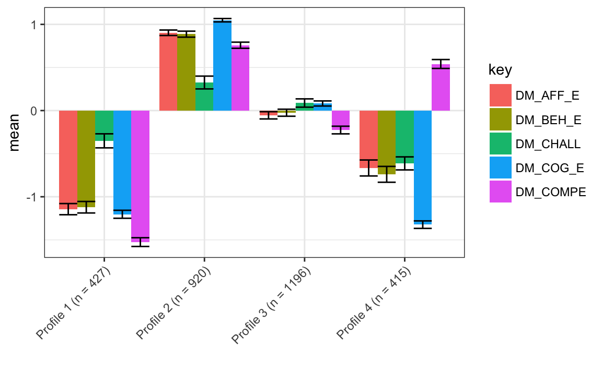
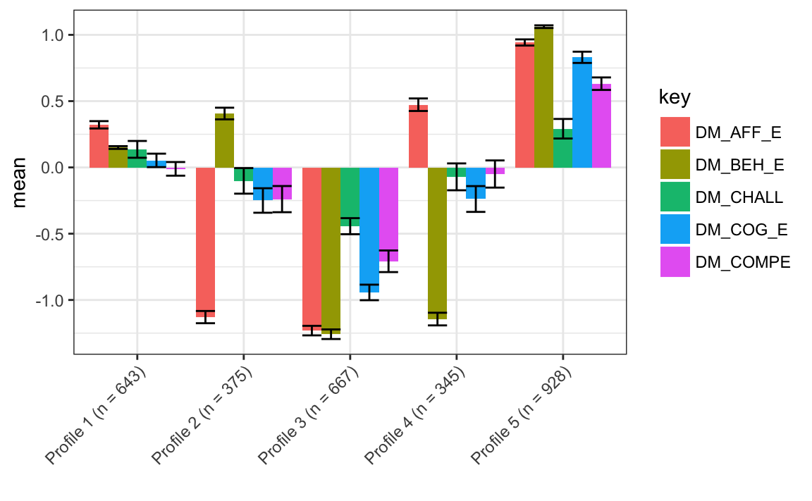
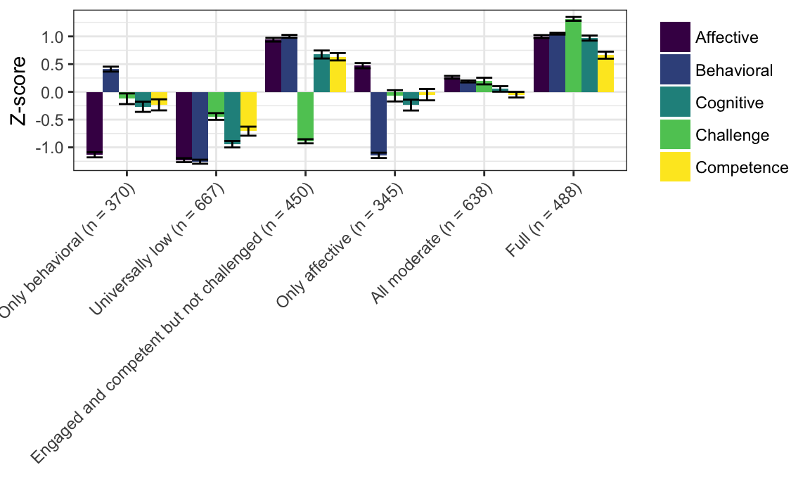
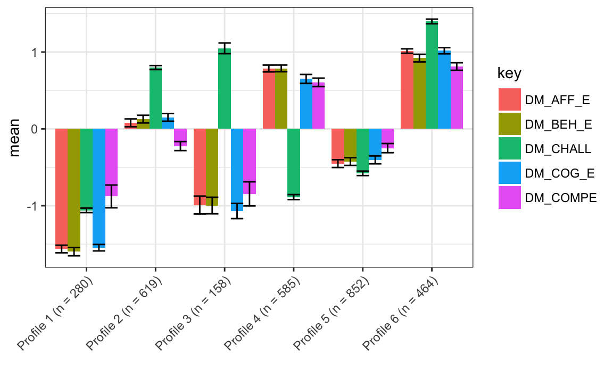
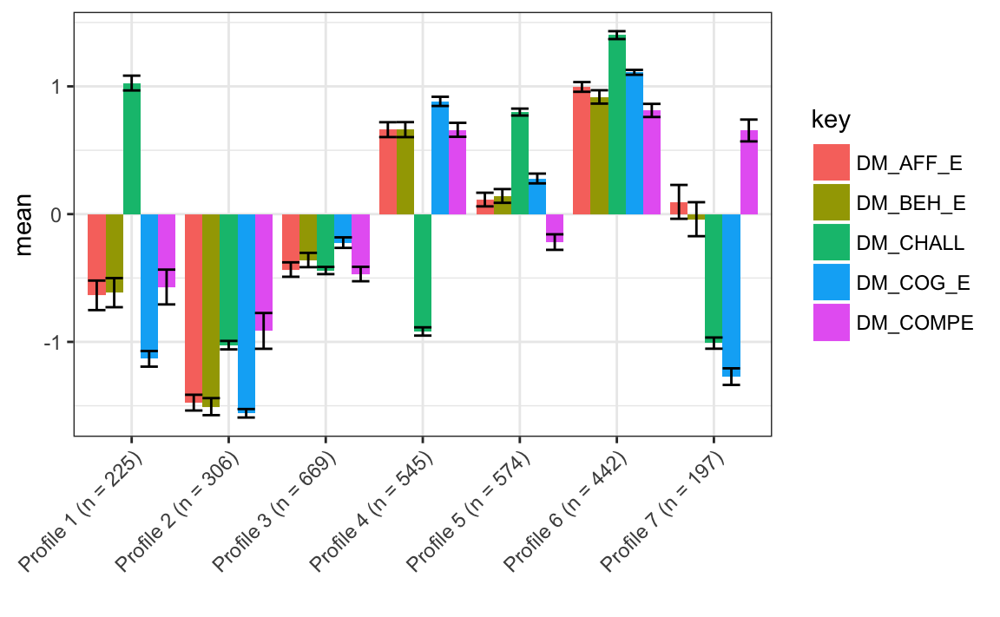
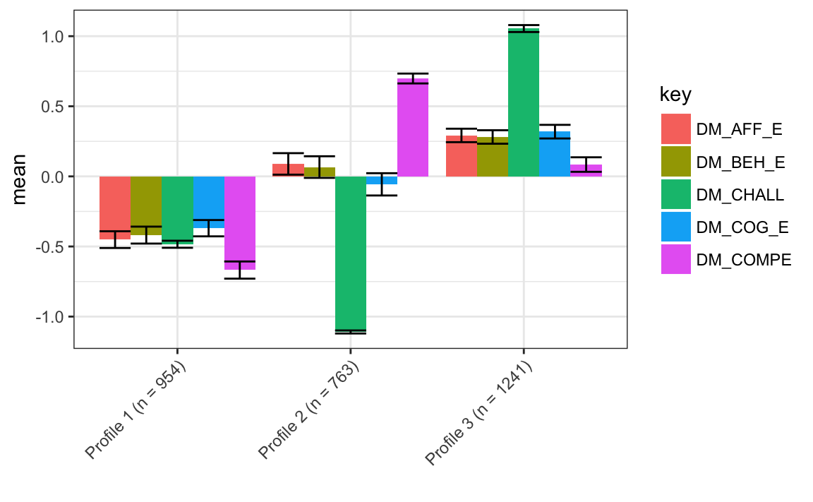
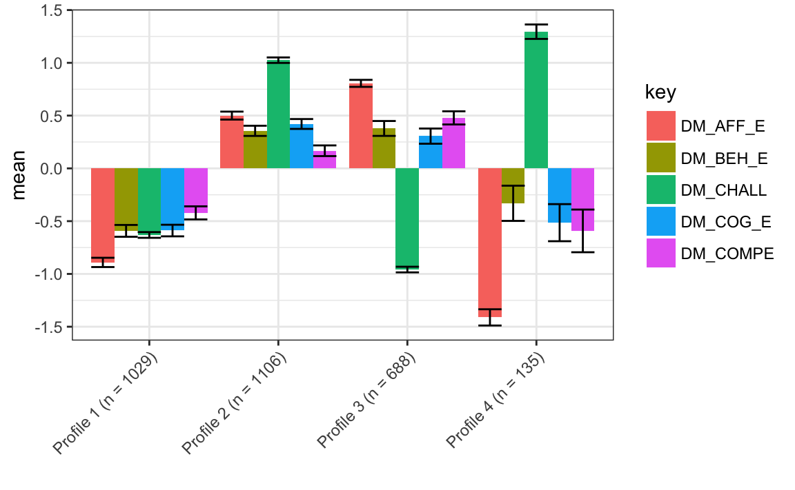
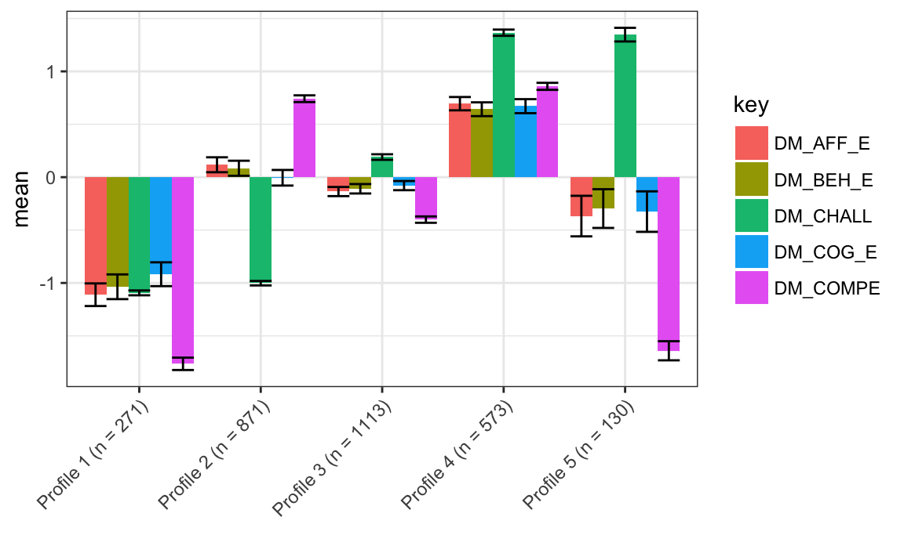

Chapter 5 Results
In this section, results in terms of the research questions are presented.
5.1 Descriptive Statistics
First, descriptive statistics for all of the study variables–overall pre-interest, the five variables that are used to estimate the PECs, and the variables for each of the five aspects of work with data (which are dichotomous variables)–are presented. Overall pre-interest and the variables used to estimate the PECs are presented first in table 4.1.
5.2 Research Question #1
This question addresses what profiles emerged from the data. This section first provides information about the statistical software that was developed and solutions for all models (whether models converged and the log-likelihood was replicated). Then, fit statistics for models that converged and for which the log-likelihood was replicated are described, followed by a comparison of specific, candidate solutions. At the end of this section, models selected are described in detail.
5.2.1 Statistical software developed
In order to provide results for this research question, the MPlus software (Muthen & Muthen, 2017) was used. While MPlus is powerful and widely-used, it can be very difficult to use as part of complex analyses. One reason for why it is difficult to use is that while it provides an environment for executing model syntax, it is not an environment, such as SPSS or R, for statistical computing (i.e., preparing data, processing and presenting results). Because of this, I created with colleagues an open-source tool, tidyLPA, in the statistical software R (Rosenberg, Schmidt, Beymer, & Steingut, 2018). This package is available on the R Comprehensive Archive Network. This software provides wrappers–functions that provide an interface–to MPlus functions via the MplusAutomation R package (Hallquist, 2018).
These wrapper functions dynamically generate MPlus syntax, so that, for example, a user can simply provide a data frame with variables to be used in the analysis, the specification for one of six models, the number of profiles to be estimated as part of the analysis, and a number of fine-grained options concerning the estimation and the output generated. From these inputs, a data file for MPlus is prepared and saved, the model syntax is created and saved in a model input file, the model is run, and the output, including the “savedata”, or the data with its associated posterior probabilities and profile assignments, is returned to R for use plots or in subsequent analyses.
Because of the considerable time that it takes to generate MPlus model syntax (i.e., when choosing to specify a model with different parameters or when changing the number of profiles to be estimated as part of the solution), this package makes it easier to carry out LPA in a flexible way, while retaining the power of the MPlus software. While this functionality makes it considerably easier to carry out LPA, it requires that MPlus be purchased and installed. Because of this, the R package I developed also includes wrapper functions to an open-source tool, mclust (Scrucca, Fop, Murphy, & Raftery, 2016). This is a very widely-used package for mixture modeling. While some authors have suggested that it can be used to carry out LPA (Oberski, 2016), a key challenge for analysts using it concerns specifying the models. This is because the models are described in terms of the geometric properties of the multivariate distributions being estimated (i.e., “spherical, equal volume”), rather than in terms of whether and how the means, variances, and covariances are estimated. This R package corresponds LPA models to the mclust models and provides the same functionality that the functions that use MPlus provide, namely, preparing data, running the model, and returning the output or use in subsequent analyses. As part of incorporating the mclust functionality, the functions that use MPlus and those that use mclust have been benchmarked (Rosenberg, 2018). Despite leading to identical results (in most cases) for small datasets, because of differences in how the E-M algorithm is initialized as well as other estimation-related differences, output will likely not be identical for many analyses.
In summary, the MPlus software is used to carry out LPA as part of this study. In order to more flexibly carry out LPA, an open-source tool, tidyLPA, was developed. This tool provides interfaces to the MPlus software as well as to the open-source mclust software. In addition to being used as part of this study, this package is provided free of use to other analysts as the first tool dedicated to carrying out LPA as part of the R software. Since being released, the package has been downloaded more than 100 times (Wickham, 2018).
5.2.2 Overall solutions for all models
First, I examined a wide range of models and solutions. I did this in order to select particular, candidate models to scrutinize in greater detail. In order to carry out this analysis, I followed guidelines recommended by the developers of MPlus (Asparouhov & Muthen, 2012; Muthen & Muthen, 2017) as well as those making recommendations about its use (Geiser, 2012). In particular, I set the number of starts to 600 for initial stage starts, and to 120 for the number of starts to be optimized. This means that for each model estimated, 600 random starting values for the parameters were used to initialize the EM algorithm. Of these 600, 120 that demonstrated the lowest log-likelihood were allowed to continue until they reached convergence or the limit for the number of iterations. In order for a model to me considered trustworthy, of these 120 runs, the lowest log-likelihood must be replicated at least one time.
The results are presented in Figure 5.1. If this is the case, then the log-likelihood would appear in the table below; if not, “LL not replicated” is reported as the value. If none of the 120 runs converge, then “Did not converge” is reported as the value. As can be seen from this table, only models associated with model specifications 1 and 2 (and among these two solutions, only those associated with particular number of profiles) converged. Thus, only solutions associated with models 1 and 2 are explored in subsequent sections.
5.2.3 In-depth statistics for particular models
After investigating the general information about a range of model solutions, solutions associated with models 1 and 2 are explored in greater detail, following recommendations associated with mixture modeling (Collins and Lanza, 2009; Geiser, 2012) and the authors of the MPlus software (Muthen & Muthen, 2017) as well as recent peer-reviewed articles (Pastor et al., 2007). For these models, the log-likelihood (LL), a range of information criteria (AIC, BIC, sample adjusted BIC [SABIC], consistent AIC [CAIC]), statistics about the quality of the profile assignments (entropy, which represents the mean posterior probability) are presented.
The information criteria are based on the log-likelihood but take various steps to penalize complex models, and so can be used to directly compare models (i.e., the model with the lowest values for these statistics can be considered to better reflect the underlying properties of the profiles). Simulation studies have suggested that BIC, CAIC, SABIC, and BLRT are most helpful for selecting the correct number of profiles (Nylund, Asparouhov, & Muthen, 2007). For the entropy statistic, higher values are considered better, though scholars have suggested that the entropy statistic not be used for model selection (Lubke & Muthen, 2007).The log-likelihood should not be interpreted directly but is presented in conjunction with the information criteria for context about how each of them differs from the log-likelihood. These are also presented in Figures 5.1 and 5.2
In addition to these statistics, a number of modified likelihood ratio tests (LRTs) are used, as the test statistics associated with unmodified LRT do not follow the distribution that the test is based on (Muthen & Muthen, 2017). These are the Vu-Lo-Mendell-Rubin LRT, Lo-Mendell-Rubin LRT, and the bootstrapped LRT. Of the three, the bootstrapped is considered to be the best indicator of which of two models, one nested (with certain parameters fixed to 0) within the other, fits better, but it is also the most computationally-intensive to carry out (Asparouhov & Muthen, 2012). For each of the LRTs, the test statistic and its associated p-value are provided; a p-value greater than .05 suggests that the model with fewer profiles should be preferred.

Figure 5.1: Fit statistics for model 1

Figure 5.2: Fit statistics for model 2
Looking across the statistics presented in Table 4.3 and Figures 4.1 and 4.2, some general ideas about which models are to be preferred emerge. Solutions are interpreted first for each model individually and then across models with the goal of choosing a smaller number of models to investigate in more detail.
For solutions associated with model 1, the decrease (indicating a preferred model) in information criteria becomes smaller as the number of profiles increases from 5 to 6 and 6 to 7. A solution associated with 8 profiles did not replicate the log-likelihood and the VLMR and LMR suggest that the solution associated with 9 profiles did not fit better than that with 8 profiles, suggesting that models with 7 or fewer profiles be preferred. Considering these models, the entropy statistic increases by a large amount between the solution associated with 4 and 5 profiles (and then decreases slightly between 5 and 6 and 6 and 7 profile solutions), suggesting (but not providing conclusive evidence) that models 5, 6, or 7 may be preferred. The bootstrapped LRT suggests that, until the log-likelihood is not replicated, every more complex model be selected. Taking these pieces of evidence into conclusion, for model 1, solutions associated with 4 through 7 may be considered in more depth, with an emphasis on solutions associated with profiles with 5 and 6 profiles on the basis of the slowing of the decrease in the information criteria associated with the solutions with greater profiles than these, and the increase in the entropy from 4 to 5 (and 6) profile solutions.
For solutions associated with model 2, only those associated with 2-5 profile solutions were associated with log-likelihoods that were replicated. For these four models, the log-likelihood decreased in a mostly consistent way, such that changes in the decrease are not as evident as those associated with model 1. The entropy statistic decreases from 2 to 3 profile solutions, increases from 3 to 4 profile solutions, and then decreases slightly from 4 to 5 profile solutions, providing some information that models associated with 4 profiles be preferred to the others. All of the LRTs suggest that the more complex model be selected, not providing clear information about which solutions are to be preferred. On the basis of these pieces of evidence, models with 3, 4, and 5 solutions may be considered in more depth. However, there is a lack of consistent evidence favoring more or less complex models.
5.2.4 Comparison of candidate solutions
In this section, specific models are examined so that candidate solutions can be compared. For all of the solutions, the data are centered to have a mean equal to 0, but not scaled to have a standard deviation equal to 1.
5.2.5 Model 1 candidate solutions
5.2.5.1 Model: 1, Profiles: 3
This solution is characterized by:
- a full profile, profile 2 (though with more modestly high levels of challenge)
- a universally low profile, profile 1 (again with more modestly - in this case low - levels of challenge)
- an all moderate profile, profile 3, characterized by levels of all of the variables close to the mean, profile 3
The number of observations associated with each of the profiles is somewhat balanced, with the all moderate profile demonstrating a higher number of observations (n = 1,288) than the full (n = 897) and universally low (n = 773) profiles. The log-likelihood was replicated many (more than 10) times. Because the profiles associated with this solution all demonstrated the same overall pattern (i.e., all five variables are high, low, or moderate), on the basis of interpretability, this particular solution may not be useful in terms of understanding how youth experience engagement and its conditions.

5.2.5.2 Model: 1, Profiles: 4
This solution is characterized by:
- a full profile, profile 2
- a universally low profile, profile 1
- an all moderate profile, profile 3.
- a competent but not engaged or challenged profile, with high levels of challenge and low levels of engagement and competence
Most profiles are in the all moderate profile (n = 1,288), with a large number in the full (n = 920) profile, and fewer in the universally low and competent (n n = 427) but not engaged or challenged profiles (n = 415). With somewhat more purchase in terms of its interpretability than the solution for model 1 with three profiles, like that solution, this one may not be as useful as more complex models for understanding youth’s experiences.
The log-likelihood was replicated many (more than 10) times.

5.2.5.3 Model: 1, Profiles: 5
This solution is characterized by:
- a full profile, profile 5
- a universally low profile, profile 3
- an all moderate profile, profile 3, though with moderate levels of affective engagement than in similar profiles associated with the four and five profile solutions, perhaps suggesting that a different profile than in those solutions
- an only behavioral profile, profile 2, with moderate levels of behavioral engagement, very low affective engagement, and moderately (low) levels of cognitive engagement and challenge and competence
- an only affective profile, profile 4, with moderate levels of affective engagement, low levels of behavioral engagement, and moderately (low) levels of cognitive engagement and challenge and competence
The number of observations associated with each of the profiles is somewhat balanced, with a large number in the full profile (n = 928), a moderate number of observations in the universally low (n = 667) and all moderate (n = 643) profiles, and fewer observations in the only behaviorally engaged (n = 375) and only affective engaged (n = 345) profiles. This solution primarily distinguishes between affective and behavioral engagement; unlike the solution for model 1 with four profiles, there is not a competent but not engaged or challenged profile. This may suggest that solutions with a greater number of profiles represents both the distinction between behavioral and affective engagement highlighted by profiles in this solution as well as profiles that are characterized by higher or lower levels of the conditions for engagement (i.e., competence). The log-likelihood was replicated four times.

5.2.5.4 Model: 1, Profiles: 6
This solution is characterized by:
- a full profile, profile 6
- a universally low profile, profile 2
- an all moderate profile, profile 5–and, like, the model 1, six profile solution–with moderate levels of affective engagement
- an only behaviorally engaged profile, profile 1, with moderate levels of behavioral engagement, very low affective engagement, and moderately (low) levels of cognitive engagement and challenge and competence
- an only affectively engaged profile, profile 4, with moderate levels of affective engagement, low levels of behavioral engagement, and moderately (low) levels of cognitive engagement and challenge and competence
- an engaged and competent but not challenged profile, profile 3, characterized by high levels of each of the three dimensions of engagement and of competence, but with low levels of challenge
The number of observations associated with each of the profiles is somewhat balanced, with the universally low profile with the largest number of observations (n = 667; the same number for this profile as in the model 1, five profile solution), followed by the all moderate profile (n = 638). Each of the other four profiles were associated with 300 to 400 observations. Unlike the model 1, four and five profile solutions, which distinguished observations on either a condition of engagement (i.e., competence) or one of its dimensions (i.e., cognitive, behavioral, and affective), this solution was associated with profiles that distinguished observations on the basis of both: There were profiles for only behaviorally and affectively engaged and for engaged and competent but not challenged. While the engaged and competent but not challenged was distinguished by low levels of challenge–different from the profile associated with the model 1, four profile solution characterized by high levels of competence–this solution is compelling because it appears to group students on the basis of multiple of the indicators, and demonstrate viability on the basis of the fit statistics (i.e., Tables 5.1 and 5.2 and Figure 5.1). The log-likelihood was replicated two times, with the next lowest log-likelihood not being replicated, followed by a log-likelihood that was replicated (at least) seven times. This solution (associated with the log-likelihood that was replicated [at least] seven times) could be investigated in further detail, to see whether–and if so, how–it differs from the solution interpreted here. Pending further exploration, this solution seems like a potential candidate for use in subsequent analyses.

5.2.5.5 Model: 1, Profiles: 6 (alternate)
This solution is characterized by:
- a full profile, profile 6
- a universally low profile, profile 1
- an engaged and competent but not challenged profile, profile 3
- a challenged profile, profile 2
- a highly challenged profile, profile 3
- a moderately low profile, profile 5
The number of observations are not very balanced, with the moderately low profile with a large number of observations (n = 852) and the challenged, engaged and competent but not challenged, and full profiles with moderate numbers of observations (from 464 to 619 observations), and low numbers of observations exhibited by universally low (n = 280) and highly challenged (n = 158) profiles. This–and, critically, the lower log-likelihood of the other model 1, six profile solution–suggests that this solution is not preferred. However, the very different profiles that emerge for this solution suggest that there might not be a somewhat under-identified solution associated with model 1 and six profiles.

5.2.5.6 Model: 1, Profiles: 7
This solution is characterized by:
- a full profile, profile 7
- a universally low profile, profile 1
- a competent but not engaged or challenged profile, profile 2, characterized by high competence and moderate (low) or low levels of engagement and challenge
- a moderately low profile, profile 3, characterized by moderately low levels of all of the variables
- a challenged profile, profile 4, characterized by high challenge, moderate (high) levels of engagement, and moderate (low) levels of competence
- a highly challenged profile, profile 5, characterized by patterns similar to those of the challenged profile, but with higher challenge and with low levels of both engagement and challenge
- a challenged but not engaged or competent profile, profile 6, characterized by low levels of challenge, and high levels of engagement and competence
The number of observations associated with each of the profiles is not very balanced, with few (n = 181) observations associated with the universally low profile and few (n = 222) observations associated with the highly challenged profile. The number of observations associated with the other profiles ranged from 317 to 651. Where the universally low profile exhibited the same number of observations in the model 1, five and six profile solutions, for this solution, there were far fewer observations. Also distinct from other solutions, none of the other five profiles were found in the other model 1 solutions. Two pairs of the profiles–challenged and highly challenged and universally low and moderately low–exhibited similar patterns among the variables that were distinguished by different mean levels. The log-likelihood was replicated twice, with the next lowest log-likelihood being replicate four times, possibly warranting further investigation. Taken together, this solution raises questions about whether it may be too complex, possibly suggesting preference for model 1 five and six profile solutions.

5.2.5.7 Model: 1, Profiles: 7 (alternate)
When investigating an alternate solution (associated with the second lowest log-likelihood) for the model 1, seven profile solution, we can see that even for the solutions associated with other log-likelihoods, the profiles that can be identified are very similar. One minor distinction concerns the competent but not engaged or challenged profile, which in the alternate solution is associated with neutral levels of affective engagement, compared to moderately low levels of affective engagement in the solution with the lowest log-likelihood. Because five of the seven profiles associated with both of these model 1, seven profile solutions seem to be distinct from those identified from simpler model 1 solutions, investigation of this alternate solution provides additional evidence that these profiles are not associated with an under-identified model and that simpler models may be preferred over these seven profile solutions.

5.2.6 Model 2 candidate solutions
5.2.6.1 Model: 2, Profiles: 3
This solution is characterized by:
- a universally low profile, profile 1, associated with moderate (low) and low levels of all of the variables; this profile is similar to the universally low profile identified as part of other solutions, although with more moderate values for some of the variables (especially cognitive engagement)
- a competent but not challenged profile, profile 2, characterized by high competence and low challenge
- a challenged profile, profile 3, characterized by very high challenge and moderate (high) levels of the other variables, similar to the challenged profile found as part of the model 1, four profile solution, but with higher levels of competence, which are moderately high in this solution but moderately low for the other solution.
The number of observations associated with each solution is fairly balanced, with the most in the challenged profile (n = 1,241), followed by the universally low (n = 954 observations) and competent but not challenged (n = 763) profiles. This solution is very different than the three profile solution that was interpreted for model 1. Model 2 differs from model 1 in that covariances between the variables are estimated (they are constrained to be the same are across the profiles). The log-likelihood was replicated (at least) ten times. Thus, this and other solutions associated with model 2 include information about how the variables relate. Including this information seems to be associated with profiles that differentiate the groups on the basis of the levels of each of the variables in more distinct ways: the model 1, three profile solution was characterized by high, moderate, or low levels of all variables for each of the three profiles.

5.2.6.2 Model: 2, Profiles: 4
This solution is characterized by:
- a universally low profile, profile 1
- a challenged profile, profile 2
- a highly challenged profile, profile 4
- an engaged and competent but not challenged profile, profile 3
The number of observations in each of the profiles is not very balanced, with more than 1,000 observations in both the universally low (n = 1,029) and challenged (n = 1,106) profiles, a moderate number if the engaged and competent but not challenged profile (n = 688), and very few in the highly challenged (n = 135) profile. The log-likelihood was replicated three times. While each of these profiles has been identified in another solution, the small number of observations in the highly challenged profile suggests that this solution be interpreted with some skepticism because of the potentially limited utility (and statistical power associated with the use) of the profiles in subsequent analyses.

5.2.6.3 Model: 2, Profiles: 5
This solution is characterized by:
- a universally low profile, profile 1
- a full profile, profile 4, although with very high levels of challenged (in addition to high levels of all of the other variables), making this profile similar to that (challenged) profile
- a highly challenged profile, profile 5
- an all moderate profile, profile 3, although with moderately lower levels of competence than is found in profiles associated with other solutions
- a competent but not challenged profile, profile 2, similar to the competent but not challenged or engaged profile, but with neutral, rather than low, levels of the engagement variables
The number of observations associated with each of the profiles is not very balanced, with a very large number of observations in the all moderate profile (n = 1,113) and a large number in the competent but not challenged profile (n = 871), a moderate number in the full profile (n = 573), and very few in the universally low (n = 271) and challenged but not competent (n = 130) profiles. The log-likelihood was replicated four times. Like for the model 2, four profile solution, the small number of observations associated with two of the profiles suggests that this solution should be interpreted with some caution.

5.2.6.4 Looking across model 1 and model 2 solutions
When looking across solutions, some overall patterns in terms of what profiles emerge and some directions for which models are to be selected for use in subsequent analysis can be identified. First, overall patterns are discussed. In table 4.3, which profiles emerge from which solution is presented.
There is a wide range of profiles. Some appear very commonly, particularly those (full and universally low) characterized by high or low levels across all of the variables. Moderate profiles, both all moderate (characterized by moderately high levels across all of the variables) and moderately low (characterized by low levels across all of the variables), also appeared commonly, particularly for the solutions for model 1.
The model 1, six and seven profile solutions are compelling because both show profiles that are distinguished by dimensions of engagement and its conditions (challenge and competence). For each solution, alternate solutions associated with higher log-likelihoods were explored. One advantage of the six profile solution is that most of its profiles can also be identified in solutions with fewer profiles. For the six profile solutions, this alternate solution was very different, whereas for the seven profile solutions, this alternate solution was highly similar. The model solutions exhibit a less clear pattern in terms of which profiles appear when. All else being equal, on the basis of parsimony, the model 1, six profile solution may be preferred. As a type of sensitivity analysis, the model 1, seven profile solution is also explored, but results for it are included in an appendix.
5.3 Research Question #2
Research question #2 is focused on the relations between each of the profiles and the aspects of work with data.

5.4 Research Question #3
Research question #3 is focused on how the relationships observed as part of RQ2 differ on the basis of pre-program interest.
5.5 Research Question #4
Research question #4 is focused on